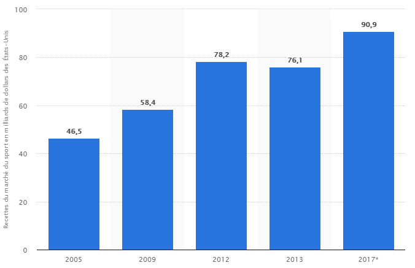

Twitter
Twitter Les chaînes Youtube
Les chaînes Youtube Les flux RSS
Les flux RSSJe suis Théo Ponton, élève-ingénieur en dernière année à l'Ecole Centrale de Lyon. Ce site web constitue mon livrable final de ma veille technologique effectuée dans le cadre de mon cours sur les Nouvelles Technologies de l'Information et de la Communication.
Les nouvelles technologies ont pris un grand élan depuis le début des années 2010, de l'explosion des objets IOT, à l'avenement annoncé des méthodes Big Data, en passant par les avancées du Machine Learning. Ces technologies ont révolutionné bon nombre de domaines de la vie de tous les jours. Pour l'éducation, de nouvelles activités pédagogiques ont lieu sur tablette. Pour la culture, la visite de certains lieux devient digitale en utilisant les applications mobiles dédiées. Pour le transport, les applications comme Uber ont révolutionné le marché.
Mais quand est-il du sport ? Quel impact ces nouvelles technologies ont eu sur lui ? Comment a t-il et va t-il évoluer grâce à ces nouvelles technologies ? Pour le moment, ce que nous savons, c'est que le sport est un domaine où règne la croissance économique. Pour s'en convaincre, il suffit de regarder le graphique ci-dessous indiquant le marché du sport aux Etats-Unis. Il a doublé depuis 2005. Il ne serait donc pas étonnant d'y retrouver des invetissements colossaux afin de mettre des nouvelles technologies au profit de celui-ci.
Source: https://fr.statista.com/statistiques/574702/recettes-totales-du-marche-du-sport-dans-le-monde/
Le but de ce site est de répondre à ces interrogations. Pour cela j'ai réalisé une veille technologique sur le sujet. Pour ce faire, j'ai utilisé un certain nombre d'outils :
Twitter Les chaînes Youtube Les flux RSSJ'ai séparé le sujet en 5 parties :